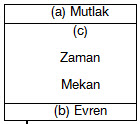

Advaita felsefesini anlamaya çalışanların karşılaştıkları en zor, tekrar tekrar sorulan ve sorulacak olan soru şudur: Sonsuz ve Mutlak olan nasıl sonlu oldu? Şimdi bu soruyu ele alacağım ve konuyu aydınlatmak için bir şekilden yararlanacağım.

Mutlak (a), Evren de (b)’dir. Mutlak, Evren olmuştur. Bununla kastedilen sadece maddi alem değil, aynı zamanda zihinsel ve ruhsal alemdir - gökler, yerler ve varolan her şey. Zihin bir değişimin adıdır, beden de bir başka değişimin adıdır vs.; ve bütün bu değişimler evreni meydana getirir. Mutlak (a), zaman, mekan ve nedensellik yoluyla Evren (b) haline gelmiştir. Advaita’nın ana fikri budur. Zaman, mekan ve nedensellik cam gibidir; biz o cam aracılığıyla Mutlak’ı görürüz. Mutlak’a alt taraftan bakarsak O bize evren gibi görünür. Buradan hemen anlaşılır ki Mutlak’ta ne zaman, ne mekan ne de nedensellik vardır. Orada zihin ve düşünce olmadığını hesaba katarsak zaman fikri de olamaz. Dışsal değişim yoksa uzay-mekan fikri de olamaz. Bir’den başkasının olmadığı yerde hareket ve nedensellik dediğimiz şey de olamaz. Bunu anlamalı, zihinlerimize kazımalıyız; nedensellik ancak Mutlak’ın, deyim yerindeyse, görüngü (fenomen) haline bürünmesinden sonra mümkündür. İrademiz, arzularımız ve bütün bu şeyler ancak ondan sonra mümkündür. Bana kalırsa Schopenhauer Vedanta’yı yorumlarken hatalıdır çünkü her şeyi iradeye bağlar. Schopenhauer Mutlak’ın yerine iradeyi koyar. Oysa Mutlak, irade olarak sunulamaz çünkü irade değişken ve görüngüseldir; zaman, mekan ve nedensellik çizgisinin üstünde değişim ve hareket yoktur. Dışsal hareket ve düşünce adını verdiğimiz içsel hareket yalnızca çizginin aşağısındadır. Öbür tarafta irade olamaz, o yüzden irade bu evrenin nedeni olamaz. Daha yakına gelirsek, bedenlerimizde her hareketin irade kaynaklı olmadığını görürüz. Bu sandalyeyi kımıldatıyorum; bu hareketin nedeni benim iradem ve bu irade kas hareketi olarak tezahür ediyor. Fakat sandalyeyi hareket ettiren gücün aynısı kalbi, ciğerleri vesaireyi de hareket ettiriyor ama irademizle değil. Söz konusu güçlerin aynı olduğunu varsayarsak irade ancak bilinç düzeyinde devreye girer; bilinç düzeyine çıkmamış olanlara irade demek, onu yanlış isimlendirmek demektir. Bu yüzden de Schopenhauer’ın felsefesinde epey karışıklık vardır.
Bir taş düşer ve biz sorarız, neden? Bu soru ancak hiçbir şeyin nedensiz olmayacağı varsayımından hareketle mümkündür. Bunu çok iyi anlamanızı istiyorum çünkü ne zaman bir şeyin niçin olduğunu sorsak mutlaka her şeyin bir nedeninin olduğunu kabul ediyoruz demektir, yani o olayı önceleyen ve ona neden olan bir şey olmuş olmalı diye düşünüyoruz. Bu ardışıklığa biz nedensellik diyoruz. Bu, evrendeki her şeyin hem bir neden hem de bir sonuç olduğu anlamına gelir. Her şey kendisinden sonra gelen bazı şeylerin nedeni, kendisinden önce gelen bazı şeylerin de sonucudur. Buna nedensellik yasası denir ve tüm düşünme faaliyetlerimizin zorunlu koşuludur. Biz evrendeki her parçacığın diğer tüm parçacıklarla bağıntılı olduğunu düşünürüz. Bu fikrin nasıl doğduğuna ilişkin çok tartışmalar yapıldı. Avrupa’da bunun insanın yapısında olduğuna inanan sezgiciler olmuş, kimileri de deneyimle kazanıldığını düşünmüş ama sorun hiçbir zaman kesin bir şekilde çözülememiştir. Vedanta’nın konuyla ilgili söyleyeceklerine daha sonra bakacağız. Fakat önce şunu anlamalıyız ki “neden?” sorunu çevremizdeki her şeyi bazı şeylerin öncelediğini ve bazı şeylerin de onu izlediğini varsayar. Bu soruda yatan bir diğer inanç da evrendeki hiçbir şeyin kendi başına varolmadığı, her şeye kendisi dışında bir şey tarafından etki edildiğidir. Birbirine bağımlılık tüm evrende geçerli olan bir yasadır. Oysa Mutlak’a neyin neden olduğunu sormakla büyük bir hataya düşeriz! Bu soruyu sormak için Mutlak’ın da bir şeylerle bağlı olduğunu, onun bir şeylere bağımlı olduğunu varsaymamız gerekir; ve bu varsayım O’nu evrenin düzeyine indirir. Oysa Mutlak’ta ne zaman, ne mekan ne de nedensellik vardır; O’nda her şey birdir. Kendi başına varolanın hiçbir nedeni olamaz. Özgür olanın nedeni olamaz, yoksa özgür değil, tutsak olurdu. Göreceli olan özgür olamaz. Böylece görüyoruz ki Sonsuz olanın niçin sonlu olduğu sorusu aslında kendi içinde çelişkili, imkansız bir sorudur. Meselenin hemen kavranamayan incelikli taraflarından ortak düzlemimizdeki mantığa, sağduyuya gelecek olursak konuya bir başka açıdan bakabiliriz. Diyelim ki cevabı bulduk, bu durumda Mutlak, Mutlak olarak kalabilir miydi? Hayır, göreceleşirdi. Bizim sağduyu düzlemimizde bilgi dediğimiz şeyle ne kastedilir? Bildiğimiz şey zihnimizle sınırlanmış olan şeydir, zihnin ötesinde yer alan şey bilgi değildir. Şimdi, eğer Mutlak olan zihinle sınırlanmışsa O artık Mutlak’lıktan çıkmıştır; O sonlu olmuştur. Zihnin sınırladığı her şey sonlu hale gelir. Bu nedenle Mutlak’ı bilmek yine kendi içinde bir çelişkidir. Soruyu cevaplamak bu yüzden mümkün olmamıştır. Bilinen Tanrı artık Tanrı değildir. O bilinemez, O her zaman Bilinemez Olan’dır.
Fakat Advaita’nın dediği, Tanrı’nın bilinebilir olmaktan öte olduğudur. Bu çok önemli bir gerçek. Eve döndüğünüzde kafanızda bilinemezcilerin anladığı tarzda Tanrının bilinemeyeceği fikri olmamalıdır. Örneğin, burada bir sandalye var, bunu hepimiz biliyoruz. Fakat eter’in ötesinde ne olduğu veya orada insanların olup olmadığını bilmek mümkün değil. Tanrınınsa bu tarzda bilinmesi veya bilinmemesi söz konusu değildir. O bilinenin de ötesindedir; Tanrının bilinmemesi ve bilinememesiyle kastedilen budur. Bu, bilinmez ve bilinemez olduğu söylenen başka bazı meselelerden farklıdır. Tanrı bilinenden fazladır. Sandal ye bilinir ama Tanrı bundan çok daha yoğun bir şekilde bilinir çünkü sandalyeyi O’nunla ve O’nun sayesinde bilebiliriz. O tüm bilginin ebedi Tanığıdır. Bildiğimiz her şeyi ancak O’nunla ve O’nun aracılığıyla biliriz. O bizim Benliğimizin Özüdür. O bu nefsin, bu Ben’in özüdür ve biz ancak o Ben’le ve Ben aracılığıyla bilebiliriz. O nedenle her şeyi Brahman’la ve Brahman aracılığıyla bilmek zorundayız. Dolayısıyla Tanrı bize sandalyeden sonsuz derecede daha yakındır, bununla birlikte o sonsuz derece daha yüksektedir. O ne bilinir, ne de bilinmez; O ikisinin de sonsuz derece daha yükseğindedir. O sizin Kendi’nizdir. “Kutsal Varlığı içinde barındırmayan kim bu evrende bir saniye bile yaşayabilir, nefes alabilir?” Çünkü bizler O’nunla ve O’nun sayesinde nefes alıyor ve varoluyoruz. O bir yerde duruyor ve kan dolaşımımızı sağlıyor değil elbette. Kastettiğimiz şey, O’nun her şeyin Öz’ü, ruhumun Ruh’u olduğu. O’nu bildiğimizi söylemek O’nu aşağılamak olurdu. Biz kendimizden sıyrılamayız, dolayısıyla O’nu bilemeyiz. Bilgi nesneleştirmedir. Örneğin, hafızanızda birçok şeyi nesneleştirirsiniz, onları kendi dışınıza yansıtırsınız. Tüm anılarım, gördüğüm ve bildiğim her şey benim zihnimdedir. Onca şeyin resmi, izlenimi zihnimdedir ve ne zaman onları düşünmeye, bilmeye kalksam ilk iş olarak onları dışarı yansıtırım. Bu Tanrıya yapılamaz çünkü O ruhlarımızın Öz’üdür; O’nu kendimiz dışına yansıtamayız. Vedanta’nın en ağır pasajlarından biri şöyle der: “Ruhlarınızın Öz’ü olan O, Hakikattir, O Benlik’tir, siz O’sunuz, Ey Şvetaketu.” “Tanrı sizsiniz"le kastedilen budur. O’nu başka bir sözle tarif edemezsiniz. O’na baba, kardeş, en yakın dost diyen dilsel çabalar Tanrıyı nesneleştirme girişimleridir ki bu mümkün değildir. O her şeyin Ebedi Öznesidir. Ben bu sandalyenin öznesiyim; sandalyeyi görüyorum; aynı şekilde Tanrı da ruhumun Ebedi Özne’sidir. Ruhlarınızın Öz’ü, her şeyin Hakikat’i olan O’nu nasıl nesnelleştirebilirsiniz? Bir kez daha tekrar ediyorum, Tanrı ne bilinebilir ne de bilinemez değildir, ikisinden de sonsuz derece daha yüksektedir O. O bizimle birdir; ve bizimle bir olanı bizim kendimiz gibi bilmek de bilmemek de mümkün değildir. Siz kendi benliğinizi bilemezsiniz; onu dışarı çıkararak bir nesne gibi gözleyemezsiniz çünkü siz osunuz ve kendinizi ondan ayıramazsınız. Onu bilmemeniz de söz konusu değil çünkü kendinizi bilmeyeceksiniz de neyi bileceksiniz? O gerçekte bildiklerimizin merkezinde yer alır. Tanrının bilinemezliği veya bilinebilirliği de aynıdır; O ikisinin de sonsuz derece üstündedir çünkü O bizim gerçek Benliğimizdir.
Birincisi, “Mutlak’a neden olan nedir?” sorusunun kendi içinde bir çelişki olduğunu, ikinci olarak da Advaita’daki Tanrı fikrinin sözü edilen Birlik olduğunu ve bu nedenle O’nun nesnelleştirilemediğini çünkü, farkında olsak da olmasak da, O’nun içinde yaşayıp hareket ettiğimizi gördük. Yaptığımız her şeyi O’nun sayesinde ve O’nun aracılığıyla yaparız. Şimdi, soru şu: Zaman, mekan ve nedensellik nedir? Advaita ikiliğin olmaması demektir; iki yoktur, bir vardır. Bununla birlikte Mutlak’ın zaman, mekan ve nedensellik yoluyla çokluk olarak tezahür ettiği şeklinde ifadeler var. Bu nedenle Mutlak ve Mâyâ (zaman, mekan ve nedenselliğin toplamı) diye bir ikilik varmış gibi görünür. Fakat Advaitacı bunlara ikilik denemeyeceğini söyler. İki olması için iki bağımsız ve mutlak varlığın nedensiz varolması gerekir. Birincisi, zaman, mekan ve nedenselliğin bağımsız varlıklar olduğu söylenemez. Zaman bütünüyle bağımlıdır; zihnimizdeki her değişimle o da değişir. Bazen rüyalarda insanlar birkaç yıl yaşadıklarını hayal ederler; bazı zamanlar da aylar sanki bir saniyeymiş gibi geçer. İkincisi, bazen zaman mefhumu hepten yiter. Aynısı uzay-mekan için de geçerlidir. Uzayın ne olduğunu bilemiyoruz. Ama yine de var; tanımsız ve başka şeylerden ayrı olarak varolamasa da. Nedenselliğin de durumu aynı.
Zaman, mekan ve nedenselliğin garip bir özelliği de onların başka şeylerden ayrı olarak varolamamalarıdır. Renk, sınır veya çevredeki şeylerle bağlantısız bir uzay-mekanı, sadece soyut uzay-mekanı düşünmeye çalışın. Düşünemezsiniz; onu iki sınır veya üç nesne arasında düşünmek zorundasınız. Onun varolabilmesi için bazı nesnelerle bir bağının olması gerekir. Zaman da öyle; soyut bir zaman fikri olmaz. Onu biri önce öbürü sonra olmak üzere iki olay bağlamında düşünmek ve iki olayı ardışıklık kavramıyla birleştirmek zorundasınız. Zaman iki olaya bağlıdır, tıpkı uzay-mekanın dışsal nesnelere bağlı olması gibi. Nedenselliği de zaman ve mekandan ayırmak imkansızdır. Bunların hepsinin özelliği bağımsız olarak varolamamalarıdır. Onlar bir sandalye veya duvarın bile varlığına sahip değillerdir. Onlar bir türlü yakalayamadığınız gölgeler gibidirler. Onların varlığı gerçek değildir; ama öte yandan yok da değillerdir çünkü evrendeki her şey kendisini onlar aracılığıyla gösterir. Dolayısıyla, birinci olarak, zaman, mekan ve nedenselliğin birleşimi ne vardır ne yoktur. İkinci olarak, bunlar bazen ortadan kaybolur. Buna örnek olarak denizdeki dalgayı düşünün. Dalganın denizle aynı olduğu kesin; ama yine de onu dalga olarak biliriz ve bu bakımdan o denizden farklıdır. Bu fark nereden geliyor? İsminden ve suretinden; yani zihindeki kavramdan ve suretten. Şimdi, dalga-suretini denizden ayrı bir şey olarak düşünebilir miyiz? Kesinlikle hayır. O her zaman deniz kavramıyla ilişkilidir. Dalga dindiği zaman suret de bir süreliğine kaybolur, oysa suret bir yanılma değildir. Dalga varoldukça suret de vardır ve sizin sureti görmemeniz mümkün değildir. İşte Maya budur.
Dolayısıyla bu evrenin bütünü kendine özgü bir surettir; Mutlak denizdir, sizle ben, güneşler ve yıldızlarız, geriye kalan her şey de denizin dalgaları. Peki dalgaları farklı kılan nedir? Yalnızca suret; ve o suret de zaman, mekan ve nedenselliktir ki hepsi bütünüyle dalganın biçimine bağımlıdır. Dalga gittiği anda onlar da kaybolur. Birey bu Maya’dan vazgeçtiği anda o birey için artık yoktur ve böylece birey özgürleşir. Bütün mücadele bizim için engeller oluşturan zamana, mekana ve nedenselliğe bağımlılıktan kurtulma mücadelesidir. Evrim kuramı nedir? Oradaki iki etmen nedir? Kendini dışa vurmaya çalışan muazzam bir gizil güç ve onu geri tutan koşullar. Çevre koşulları bu gücün kendini ortaya koymasına müsaade etmez. Dolayısıyla bu koşullarla mücadele edebilmek için güç, yeni yeni bedenlere bürünür. Bir amibin bedeni bu mücadele içerisinde başka biçimler alır, bazı engelleri yener, sonra başka bir biçime girer ve böyle devam eder, ta ki insan olana kadar. İmdi, bu görüşü mantıksal sonucuna vardırırsak öyle bir zaman gelmeli ki amibin içinde olan ve insan olarak evrimleşen güç doğanın karşısına çıkarabildiği tüm engelleri yenecek ve böylece çevrenin dayatmasından kurtulacak. Metafizikte bu şöyle ifade edilir: her fiilin iki bileşeni vardır, biri özne ve öbürü nesne; hayatın amacıysa özneyi nesnenin efendisi kılmaktır. Örneğin, adamın biri beni payladığı için kendimi mutsuz hissediyorum. Benim mücadelem, çevre koşullarını yenecek kadar güçlenmek olacaktır ki o adam beni payladığında bir daha bundan etkilenmeyeyim. Hepimizin yapmaya çalıştığı budur. Ahlakla kastedilen nedir? Özneyi Mutlak’la uyumlu kılarak onu güçlendirmek ve böylece doğanın bizi denetlemesine engel olmak. Bizim tüm çevresel koşullara egemen olacağımız bir zamanın gelmesi felsefemizin mantıksal bir sonucudur; çünkü doğa sonludur.
Öğrenmemiz gereken bir şey daha var. Doğanın sonlu olduğunu nasıl bilebiliriz? Bunu ancak metafizik yoluyla bilebiliriz. Doğa sınırlandırılmış Sonsuz’dur. Bu yüzden de sonludur. Dolayısıyla tüm çevre koşullarına egemen olacağımız bir zaman mutlaka gelmeli. Peki nasıl egemenlik kuracağız? Nesnel koşulların tümüne egemen olmamız söz konusu değil. Bunu yapamayız. Küçük balık düşmanlarından uçarak kaçmak ister. Bunu nasıl yapar? Kanatlar geliştirip kuş haline gelerek. Balık suyu veya havayı değiştirmedi; kendisi değişti. Değişim her zaman özneldir. Evrimin neresine bakarsanız bakın, doğa üstünde kurulan egemenlik öznenin değişmesiyle gerçekleşir. Bunu dine ve ahlaka uygulayın; kötü üstünde kurulacak egemenliğin yalnızca öznel değişimle olacağını göreceksiniz. Advaita sistemi gücünü buradan alır, insanın öznel yanından. Kötülükten ve mutsuzluktan söz etmek saçmalıktır çünkü onların varlığı dışarıda değil. Ben öfkeye karşı bağışıksam sinirlenmem. Her türlü nefrete karşı bağışıksam asla nefret beslemem.
Dolayısıyla söz konusu egemenliği gerçekleştirmenin yolu öznel olandan geçer; özneyi kemale erdirmek lazım. Gerek fizik gerekse ahlak boyutunda modern araştırmalarla aynı görüşte olan, hatta onlardan biraz daha ileri giden tek dinin Advaita olduğunu, onun modern bilim adamlarına bu yüzden cazip geldiğini söylemek biraz cüretli bir ifade olabilir. Ama bilim adamları eski ikici (düalist) kuramları yeterli bulmuyorlar, bu kuramlar onların ihtiyaçlarını gidermiyor. Bir kimsenin yalnızca imanı değil, entelektüel inancı da olmalı. Günümüzde, ondokuzuncu yüzyılın ikinci yarısında, kişinin atalarından değil de başka kaynaklardan gelen her dinin yanlış olması gerektiği yolunda bir düşünce hâlâ varlığını koruyor; bu da bizde hâlâ bir zayıflık olduğunu ve bu düşüncelerin bırakılması gerektiğini gösteriyor. Bunun yalnızca bu ülkede görülen bir durum olduğunu söylemek istemiyorum. Bu en başta kendi ülkem olmak üzere her yerde böyle. Advaita’nın halka ulaşmasına hiçbir zaman izin verilmedi. Önce keşişler ona bağlandılar ve onu tutup ormana götürdüler, öyle olunca adı “Orman Felsefesi”ne çıktı. Tanrının lütfuyla Buda geldi de onu halka öğretti ve bütün ulus Budist oldu. Bundan çok sonra tanrıcılar (teistler) ve bilinemezciler (agnostikler) ulusu yine parçaladıklarında anlaşıldı ki Hindistan’ı maddecilikten kurtaracak tek yol Advaita’dır.
Advaita Hindistan’ı iki kez maddecilikten kurtardı. Buda’dan önce maddecilik ürkütücü düzeye gelmişti ve bu maddecilik günümüzdekinden farklı, çok daha korkunç ve kötü tabiatlıydı. Ben de bir bakıma maddeciyim çünkü sadece Bir’in varlığına inanıyorum. Maddeciler de sizin buna inanmanızı isterler; yalnız, onlar buna madde derler, bense Tanrı diyorum. Maddeciler tüm umutların, dinin ve her şeyin bu maddeden çıktığını kabul ederler. Ben diyorum ki, bütün bunlar Brahman’dan çıkmıştır. Fakat Buda’nın zamanından önceki maddecilik daha kaba türdendi ve şöyle diyordu: “Yiyin, için, keyfinize bakın; ne Tanrı var, ne ruh ne de cennet; din kötü kalpli rahiplerin uydurmasından başka bir şey değil.” Bu maddecilik yaşadığımız müddetçe mutlu olmaya çalışmamızı salık veriyordu; borç parayla bile olsa yiyin ve borcunuzu ödemeyi düşünmeyin bile. Eski maddecilik böyleydi ve bu felsefe o kadar yaygınlaştı ki bugün bile ona “popüler felsefe” diyorlar. Buda, Vedanta’yı gün ışığına çıkardı, onu insanlara verdi ve Hindistan’ı kurtardı. Ölümünden bin yıl sonra yine aynı görüşler hüküm sürmeye başladı. Avam, kitleler ve çeşitli ırklar Budizm’i benimsemişlerdi ama Buda’nın öğretileri doğal olarak zamanla saptırıldı; çünkü insanlar cahildiler ve umursamıyorlardı. Budizm bir Tanrıyı, evrenin Hükümdarını telkin etmiyordu dolayısıyla kitleler yavaş yavaş yine kendi tanrılarını, şeytanlarını ve saplantılarını öne çıkardılar. Sonuçta Hindistan yine muazzam bir karmaşaya sürüklendi. Maddecilik yine yaygınlaştı ve üst tabakalarda ahlaksızlık, alt tabakalarda da hurafe biçimini aldı. Sonra Şankarâçârya geldi ve bir kez daha Vedanta felsefesini canlandırdı. Onu akılcı bir felsefe haline getirdi, Upanişadlardaki savlar çoğunlukla pek açık değildir. Buda’yla felsefenin ahlaki boyutu vurgulanmıştı, Şankaraçarya ise entelektüel boyutu netleştirdi. O Advaita’yı düzenledi, akılcı hale getirdi ve insanlara olağanüstü tutarlı bir sistem sundu.
Bugün Avrupa’da maddecilik egemen. Modern kuşkuculuların kurtuluşu için dua ediyor olabilirsiniz fakat onlar boyun eğmez, her şeyin nedenini isterler. Avrupa’nın kurtuluşu akılcı bir dindedir; ve Advaita - ikici olmayış, Bir-lik, kişiliğe sahip olmayan bir Tanrı anlayışı - aydın insanlar arasında tutunabilecek tek dindir. Din ne zaman ortadan kalkacak ve dinsizlik hükümran olacak gibi olsa o gündeme gelir; Avrupa ve Amerika’da tutunmasının nedeni de bu.
Bu felsefeyle ilgili söyleyeceğim bir şey daha var. Eski Upanişadlarda soylu bir şiir anlayışının egemen olduğunu görürüz, onların yazarları şairdiler. Eflatun insanlara ilhamın şiirle geldiğini söyler; ve öyle görünüyor ki eski Rişiler, yani Hakikati görenler, bu hakikatleri şiir aracılığıyla göstermek üzere insanlığın üstüne yükselmişlerdi. Onlar hiç vaaz etmediler, felsefe yapmadılar ve yazmadılar. Müzik onların kalbinden taştı. Buda’da dini gündelik kılan ve herkesin kapısına kadar getiren büyük, evrensel bir kalp ve sonsuz bir sabır vardı. Şankaraçarya’daysa her şeye aklın yakıcı ışığını tutan muazzam bir entelektüel güç görürüz. Bizler bugün entelektüelliğin parlak güneşiyle Buda’nın yüreğini, sonsuz sevgi ve merhametle dolu o harika yüreği bir arada görmek istiyoruz. Bu birlik bizi en yüksek felsefeyle donatacaktır. Bilim ve din buluşacak ve el sıkışacaklar. Şiir ve felsefe arkadaş olacaklar. Geleceğin dini bu olacak ve eğer başarabilirsek bunun tüm zamanlar ve insanlar için geçerli olacağından emin olabiliriz. Modern bilim için kabul edilebilir olan budur çünkü o da aynı sonuca ulaşmak üzeredir. Bilimin öğretmenleri her şeyin tek bir gücün tezahürü olduğunu söyledikleri zaman bu size Upanişadlardan işittiğiniz Tanrıyı hatırlatmıyor mu? “Evrene giren ateş farklı biçimlerde tezahür ettiği gibi Tek Ruh da bütün ruhlarda tecelli eder ama bunun yanında nihayetsizdir de.” Bilimin nereye yöneldiğini görmüyor musunuz? Hindu ulusu zihnin, metafiziğin ve mantığın araştırılması yoluyla ilerledi. Avrupalı uluslar dışsal doğadan başladılar ve şimdi aynı sonuçlara ulaşıyorlar. Zihnin araştırılmasının sonucunda Bir-liğe, Evrensel Bir’e, her şeyin İçsel Ruhuna, her şeyin Özüne ve Hakikatine, Ebediyen Özgür Olan’a, Ebediyen Kutlu Olan’a, Ebediyen Var Olan’a ulaşıldığını gördük. Maddi bilimler aracılığıyla da aynı Bir-liğe ulaşıyoruz. Bugün bilim bize her şeyin aynı enerjinin bir tezahürü olduğunu, o enerjinin varolan her şeyin toplamı olduğunu ve insanlığın köleliğe değil, özgürlüğe doğru gittiğini söylüyor. İnsanlar niçin ahlaklı olsunlar? Çünkü ahlak, özgürlüğe giden yoldur, ahlaksızlıksa köleliğe götürür.
Advaita sisteminin kendine özgü bir diğer yanı da onun başından beri yapıcı olmasıdır. “Kimsenin inancına dokunmayın, cehalet yüzünden kendilerini daha aşağı türden ibadetlere bağlayanları bile,” deme cesaretini göstermek övülesi bir şeydir. Ama o öyle der, kimseyi rahatsız etmeyin, herkesin daha da yükselmesine yardım edin; tüm insanlığı kucaklayın. Bu felsefe bütünün toplamı olan bir Tanrıyı telkin eder. Herkesi kapsayacak evrensel bir din arıyorsak o din parçalardan oluşmakla kalmamalı, daima onların bütününün toplamı olmalı ve dinsel gelişimin tüm derecelerini kapsamalıdır.
Bu düşünce başka hiçbir dinsel sistemde görülmez. Onların hepsi bütünlüğe ulaşmaya çalışan parçalardır. Parçanın varlığının amacı yalnızca budur. Dolayısıyla başından beri Advaita’nın Hindistan’daki mezheplerden hiçbirine bir düşmanlığı olmamıştır. Bugün de Hindistan’da ikiciler var, hem de çoğunluktalar çünkü ikicilik doğal olarak az eğitimli dimağlara daha cazip geliyor. O evren konusunda çok kolay, doğal ve sağduyulu bir açıklamadır. Fakat Advaita’nın ikicilerle bir kavgası yoktur. Biri Tanrının evren dışında, cennette bir yerde olduğuna inanırken öbürü O’nun kendi Ruhu olduğuna, O’nu uzakta bir yerde görmenin küfür olduğuna inanır. Onun düşüncesine göre Tanrıyı ayrı tutmak korkunç bir şeydir. O yakınların en yakınıdır. Hiçbir dilde bunu Bir-lik dışında bir sözcükle açıklamak mümkün değildir. Bir Advaitacının başka bir fikirle tatmin olmaması gibi ikici de Advaita düşüncesi karşısında dehşete düşer ve onun küfür olduğuna inanır. Öte yandan, Advaitacı bu görüşlerin de varolması gerektiğini bilir ve bu yüzden doğru yolda olan ikicilerle çekişmez. İkicilerin bakış açısıyla evrenin çokluk olarak görülmesi doğal bir şey. Bu onun bakış açısının zorunlu kıldığı bir şey. Bırakın o öyle düşünsün. Advaitacı bilir ki kuramları ne olursa olsun, ikiciler de kendisiyle aynı hedefe ilerlemektedirler. Fakat bu konuda Advaitacı ikicilere tamamen ters düşer; ikiciler bakış açıları gereği farklı görüşlerin hepsinin yanlış olduğunu düşünürler. Tüm ikiciler doğal olarak salt insanbiçimli bir Kişi-Tanrıya inanırlar. Bu Tanrı kimilerinden hoşnut olan, kimilerinden de olmayan güçlü bir hükümdar gibidir. O keyfi olarak bazı insanlar veya ırklardan, kendisini yüceltenlerden razıdır. Dolayısıyla ikici, Tanrının gözdeleri olduğu sonucuna ulaşır ve kendisi de onlardan biri olmayı umar. Neredeyse her dinde, “Bizler Tanrının razı geldikleriyiz, sizler de ancak bizim inandığımız gibi inanırsanız O’nun rızasına mazhar olabilirsiniz,” düşüncesini görebilirsiniz. Kimi ikiciler o kadar dar görüşlüdürler ki yalnızca kaderlerinde Tanrının gözdesi olmak yazanların kurtuluşa ereceklerine inanırlar; geri kalanlar ne kadar çalışırlarsa çalışsınlar, kabul edilmezler. Bana bu ayrımcılığı yapmayan bir tane ikici din gösterin. Bu yüzden de ikici dinler, hep yapageldikleri gibi, birbiriyle kavga etmeye mahkumdurlar. Bu ikiciler eğitimsizlerin kendini beğenmişliklerine hitap ederek onların sevgisini kazanırlar. Onlar ayrıcalığa sahip olmaktan hoşlanırlar. İkiciler elinde sopasıyla sizi cezalandırmaya hazır bir Tanrı olmadan ahlaklı olunamayacağını düşünürler. Düşünmeyen kitleler genellikle ikicidirler ve onlar - zavallılar - her ülkede binlerce yıldır eziyet görmektedir; dolayısıyla onların kurtuluştan anladıkları, cezalandırılma korkusundan kurtulmaktır. Amerika’da bir papaz bana sormuştu, “Ne! Sizin dininizde Şeytan yok mu? Bu nasıl olabilir?”. Fakat baktığımızda görürüz ki bu dünyaya gelmiş en iyi ve en büyük adamlar o yüksek kişiliksiz fikir üstünde çalışmışlardır. “Ben ve Babam Biriz,” diyen İnsan milyonları etkiledi. Bu düşünce binlerce yıldır kalpleri fethetti. Ve biliyoruz ki aynı İnsan başkalarına karşı merhametliydi çünkü ikici değildi. Kişi-Tanrı’dan başkasını tahayyül edemeyen kitlelere o, “Cennetteki Babanıza ibadet edin,” demişti. Daha yüksek fikirleri kavrayabilenlere de, “Ben asmanın gövdesi, siz dallarısınız,” dedi. Kendisini daha açık bir şekilde ortaya koyduğu öğrencilerineyse en yüksek gerçeği duyurdu: “Ben ve Babam Biriz.”
Buda ikici tanrıları asla umursamamıştır. Sefil bir keçi için kendi bedeninden vazgeçmeye hazır olduğu halde ona tanrıtanımaz ve maddeci dendi. O İnsan tüm ulusların sahip olduklarından daha yüksek ahlaki ülküleri hayata geçirmiştir. Nerede bir ahlak düzgüsü varsa orada o İnsan’ın ışığını görürsünüz. Büyük yürekleri dar sınırlara hapsedenleyiz, özellikle de insanlık tarihinin yüz yıl önce bile hayal edilemeyecek entelektüel ve bilimsel düzeye gelmiş şu aşamasındayken. İnsanları dar kalıplara girmeye zorlamakla onları hayvanlar ve düşüncesiz kitleler diye aşağılamış olursunuz. Ahlaki yaşantılarını öldürürsünüz. Şu anda gerekli olan, en büyük yüreklerle en yüksek entelektüelliği, sonsuz sevgiyle sonsuz bilgiyi birleştirmektir. Vedantacılar için Tanrının şu üçü dışında bir sıfatı yoktur: O, Sonsuz Varlıktır, Sonsuz Bilgidir ve Sonsuz Saadettir; çünkü o bu üçünü Bir kabul eder. Bilgi ve sevgisiz varlık olmaz; sevgisiz bilgi ve bilgisiz sevgi de olmaz. Bizim istediğimiz Varlığın, Bilginin ve Saadet arasındaki uyumun Sonsuz olmasıdır. Çünkü biz bunu amaçlıyoruz. Biz uyum istiyoruz, tek yanlı gelişme değil. Şankara’nın zekasıyla Buda’nın yüreğinin birlikte olması mümkündür. Umarım hepimiz bu kutlu birliğe ulaşmak için çaba gösteririz.